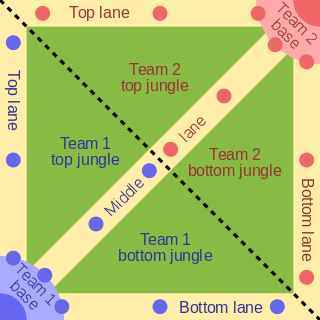

MOBA is a subgenre of RTS(Real Time Strategy Games) where players control their own hero, a character stronger than the AI creep soldiers, and battle with the opposing heros. The game is typically played from a third bird's eye view viewpoint because it gives the player a better view of the chaos of the battlefield instead of focusing on a single thing at a time.
Map of a MOBA
The Map is the most unique game design element of the MOBA games. Below is a map of a typical MOBA game. Yellow lines are the "lanes" where action is focused; blue and red dots are the defensive "towers/turrets" that defend them; light-colored quarter circles are the teams' bases; and blue and red corners are the structures whose destruction claims victory.

MOBA Terminologies
Last hit/last-hitting: Killing a minion, monster or enemy hero yields a set amount of gold. But that gold isn’t divided up among teammates. All the gold goes to the hero who delivers the killing blow. The act of striking the enemy last—resulting in the enemy’s death—is known as “last-hitting.” Last-hitting is an art form in unto itself; those who can consistently last hit will be much more successful because they’ll have more gold to play with. In the lane, this is all about timing because friendly minions will continue to attack the enemy despite your desire to last hit. You’ll need to time your final attack to kill the enemy before the minion does. Most new players will try last-hitting in practice modes until they feel pretty confident in this, especially if interested in playing in lane.
Farm/farming: Focusing on gaining gold through the act of last-hitting minions or monsters. Farming is the primary way you will get enough gold to buy better items at the shop.
Ranged: A hero (or creature) who attacks from a distance with a projectile weapon.
Meele: A hero (or creature) who attacks from close up, often with a handheld weapon such as a sword or axe.
Gank/ganking: A “gank” is an ambush, usually involving multiple allies attacking an unsuspecting enemy. To “gank the lane” is to hide in the shadows at the edge of the lane and jump out when the time is right.
Kite/kiting: Using a ranged hero and continually firing and damaging an enemy while dancing at the edge of the enemy’s range. Ideally, you’d fire and then dance back out of range and so on and so forth. Kiting is often a means of simultaneously attacking and retreating, in an attempt to maintain a safe distance. Visualize a kite on a string caught in the wind. This represents the distance and fluid nature of the attack.
Juke: A quick change of direction while moving, in an attempt to fool or evade an enemy hero. Often, this when you’re low health and attempting to escape. You might run around a corner, get into the brush and then go an unexpected direction to see if you can shake the chasing enemy. If there are any hockey fans out there, this is similar to a deke.
Buff: A change in a hero's current status that gives them a temporary advantage such as they have more health or they can deal more damage.
Crowd Control/CC: An item or hero ability that can temporarily inhibit the enemy.
Cooldown: When you use an ability, it goes on “cooldown.” This is the timer that represents the real-life time that must elapse before you can use that ability again.
Feed: Repeatedly putting yourself in a vulnerable or exposed position, resulting in your death at the hands of an enemy hero. This is called feeding because you’re personally supplying that enemy with the gold needed to build powerful items.
Carry: An offensive hero role with two meanings. Often the carry is expected or needed to “carry” the team to victory. This can also independently refer to a hero that is weak in the early game but gets more and more powerful as the match progresses, and is frightening to oppose in the late game. Weapon carries are focused on basic attack power.
Support: A hero role focused on bolstering the power of teammates and/or sustaining the health of teammates.
Team Builder
The term "position" here means the farm dependency of the hero which means that position 1 laner will have a way higher item dependency than a position 5 support. The team builder below is only a general guideline to create a generic team. Players may also want to use other strategies created by themselves to gain an advantage in certain matchups.
Position 1(Bottom Laner):